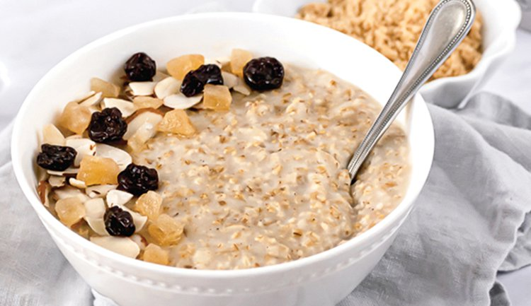

Quaker Oats

Description
Initially when I ate the oats for the first I felt like puking
but now it is my one of the go to low-effort recipes when I am not well.
Ingredients
- 1/2 cup oats
- 1 cup water or milk
- Dash of salt (optional; for low sodium diets, omit salt)
Directions
- Combine water or milk, salt and oats in a medium microwave-safe bowl
- Microwave on HIGH 2 1/2 to 3 minutes; stir before serving